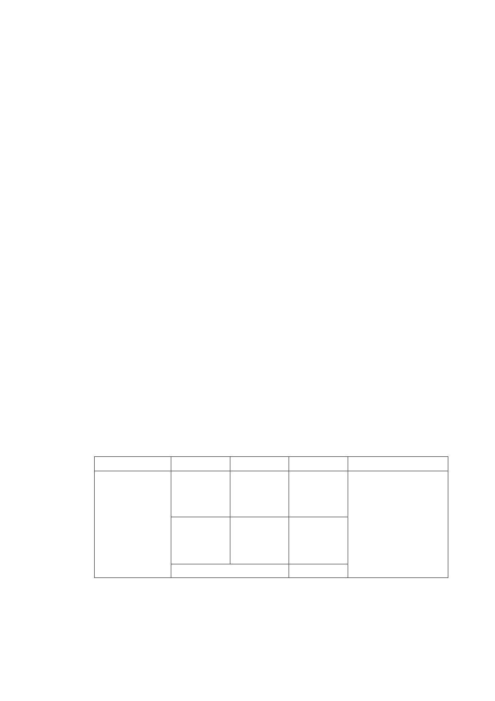

計畫變更，期爭取本專案相關容積獎勵，提高都市更新獎勵之開
發誘因，加速都市更新事業進行，並能改善窳陋市容，進而提升
都市整體環境品質，爰依都市計畫法第27條第1項第4款規定，辦
理本次都市計畫變更事宜。
三、 原都市計畫及土地使用現況
（一） 原都市計畫
本計畫使用分區為第三種住宅區及第三之二種住宅區。
（二） 土地使用現況
1. 本計畫範圍現況四面臨路，南側為42ｍ北安路；東西兩側
為8ｍ計畫道路；北側為6ｍ的現有巷道，目前僅臨北安路
側設置人行道。
2. 計畫範圍內計有8棟合法建築物，均為民國66年所興建之四
層樓鋼筋混凝土造建築物，建物年代久遠。建物使用以住
宅為主，沿北安路一側部分作商業使用，二幢建物間為後
巷，並有設置變電箱，部分住家將其作為停車空間及居家
垃圾暫存區。
3. 本計畫區土地及建物權屬皆為私有。
四、 變更細部計畫內容：
（一）變更土地使用分區
位置
原計畫 新計畫 面積（㎡） 變更理由
北 安 路 以 第三種 第三種
北 、 北 安 路 住宅區 住宅區(特)
811 巷 以 東 、
北 安 路 821 巷
以西、北安路 第三之二
821 巷 4 弄 以 種住宅區
第三之二
種住宅區
(特)
南 合計
370
2,878
3,248
配合「修訂臺北市
老舊中低層建築社
區辦理都市更新擴
大協助專案計畫」，
變更原計畫內容。
（二）土地使用分區管制
1. 使用強度：
土地使用及強度：第三種住宅區(特)及第三之二種住宅區(特)
- 15 -